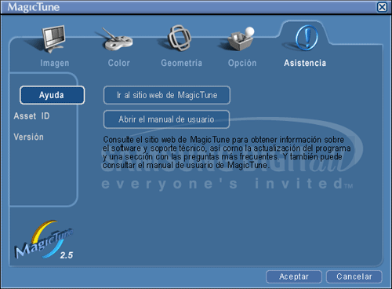

|

|
 |
MagicTune permite realizar un ajuste rápido de la pantalla con la capacidad de guardar y usar fácilmente las configuraciones del monitor que mejor se adapten al usuario.
- El modo OSD puede resultar distinto respecto a la guía del usuario dependiendo de la especificación de cada monitor.
|
|
|
El modo OSD facilita el ajuste de la configuración
en todos los
monitores
.
Cuando está seleccionada, cada ficha de la ventana
de control muestra la descripción general de los
elementos de menús secundarios disponibles para el
ajuste.
Cuando está seleccionada, cada ficha visualiza una
lista de menús.
Para un ajuste
r
á
pido de la
configuraci
ó
n del monitor, el modo OSD permite abrir
c
ó
modamente todas las fichas y elementos de
men
ú
s
secundarios.
|
Aceptar
|
Aplica cualquier cambio realizado y sale de
MagicTune.
|
|
Restablecer
|
Restablece los valores del monitor visualizados en
la ventana activa de control a los valores
recomendados por el
fabricante.
|
|
Cancelar
|
Sale de MagicTune
sin aplicar los cambios realizados.
Si no ha realizado
ning
ú
n cambio en la ventana de control, hacer clic en
" Cancelar" no tiene
ning
ú
n efecto.
|

|
Permite que el usuario ajuste la
configuraci
ó
n de la pantalla con los valores deseados.
|
Brillo
|
Aclara u oscurece la pantalla en su
totalidad.
Los detalles de las imágenes de las áreas oscuras
pueden perderse si no se ajusta la luminosidad con
el nivel apropiado.
Ajuste la luminosidad para las mejores condiciones
de
visualizaci
ó
n.
|
|
Contraste
|
Ajusta la diferencia entre las áreas de pantalla
más luminosas y más oscuras.
Determina la nitidez de las
im
á
genes.
|
|
MagicBright™
|
Pulse otra vez el botón MagicBright y seleccione el modo deseado.
- cuatro modos distintos .
- Texto : Apropiado para documentos o trabajos que requieren
la visualización de gran cantidad de
texto.
- Internet: Para
trabajar con una mezcla visual de texto y
gráficos.
- Juego:
Para visualización de imágenes en movimiento, como
un
juego.
- Ocio
:
Para visualización de imágenes en movimiento, como
un DVD o un
VCD.
- Texto : Apropiado para documentos o trabajos que requieren
la visualización de gran cantidad de
texto.
- Internet: Para
trabajar con una mezcla visual de texto y
gráficos.
- Ocio
:
Para visualización de imágenes en movimiento, como
un DVD o un
VCD.
|
|
Ajusta la "calidez" del color del fondo del
monitor o de la imagen.
|
Tono de color
|
El tono del color se puede
cambiar.
- Cálido - Normal - Frío
- Cambio
|
|
Control de color
|
Ajusta el color de la imagen del
monitor.
Puede cambiar el color del monitor con su color
deseado.
|
Ajusta
los valores de Position
(Posición), Size (Tamaño) y Rotation (Rotación).
|
Geometría 1
|
Ajusta
los valores de Posición, Tamaño y Rotación.
|
|
Geometría 2
|
Adjusta los valores de
Efecto cojín
,
Balanceo
,
Trapezoide
y
Paralelo
- Efecto cojín
- Balanceo
- Trapezoide
- Paralelo
|
|
Otros
|
Adjusta los
valores de Moiré, Desmagnetizar, Sidepin esquina y esquina
inferior.
- Moiré
- Desmagnetizar
- Sidepin esquina
superior
- Sidepin esquina
inferior
- Balanceo esquina
superior
- Balanceo esquina
inferior
|
|
Puede configurar
MagicTune usando
las siguientes opciones.
|
Preferencias
|
Abre el cuadro de diálogo
Preferences
(Preferencias).
Las preferencias activas tienen una "V" en la
casilla de verificación.
Para activar o desactivar cualquier preferencia,
coloque el cursor sobre la casilla y haga
clic.
- Para abrir el menú de la bandeja de sistema.
- Para abrir los menús de MagicTune, haga clic en el icono del [menú de la bandeja de sistema].
Los menús no aparecen si no está activada la casilla [Enable System Tray (Habilitar bandeja de sistema)] en [Options (Opciones)] ' [Basic Settings (Configuración básica)].
- Seleccionar idioma - El idioma seleccionado afecta solamente al idioma del OSD.
|
Muestra el Id. del producto y el
n
ú
mero de
versi
ó
n del programa, y permite utilizar la
caracter
í
stica de
Ayuda.

|
Ayuda
|
Visite el sitio Web de
MagicTune o haga
clic para abrir los archivos de Ayuda (Manual del
Usuario) para más información sobre cómo instalar
o ejecutar
MagicTune.
El Manual del Usuario se abre dentro de una
ventana de
exploraci
ó
n
b
á
sica.
|
|
Asset id
|
Abre una ventana de
informaci
ó
n sobre el monitor que muestra la fecha de
fabricaci
ó
n del monitor.
|
|
Versión
|
Muestra el
n
ú
mero de
versi
ó
n de MagicTune.
|
|

 Definición de la ficha Imagen
Definición de la ficha Imagen Modo OSD
Modo OSD